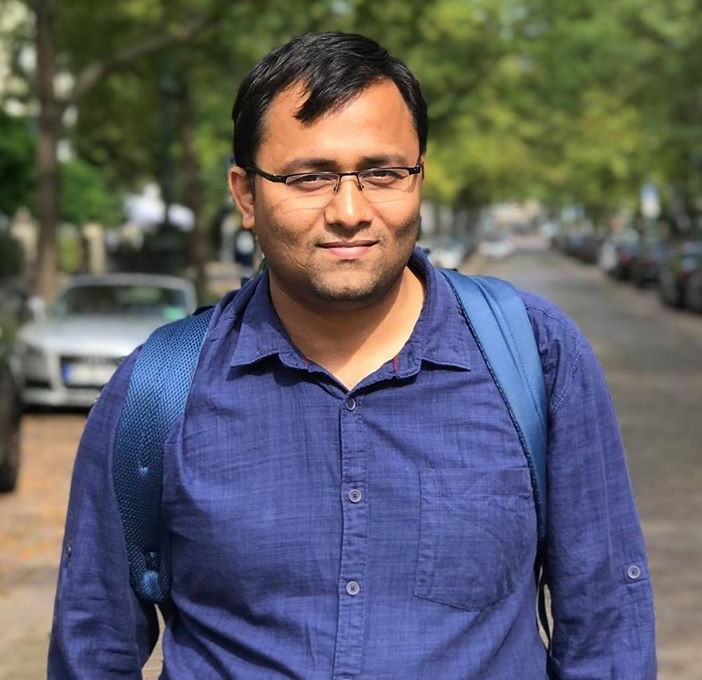

Affiliation
Assistant Professor || Associate Faculty,
Department of Electronics & Electrical Engineering || Centre for Intelligent Cyber-Physical Systems,
Indian Institute of Technology Guwahati,
Room No. 213, New Extension Block,
Guwahati - 781039,
Email - bhawal[at]iitg.ac.in,
Phone - +91 361 258 2511.
ORCID ::
Google Scholar
Research Interests
-
Control in Robotics
- Unmanned Aerial Vehicles (Quadrotors)
- Unmanned Ground Vehicles
- Unmanned Underwater/Surface Vehicles
- Robotic Arm
-
System Theory
- Optimal Control
- Linear/Non-linear system theory
- Model order reduction
- Model free, data driven control
🔔 I am in the look out for students with an interest aligned with my research interests.